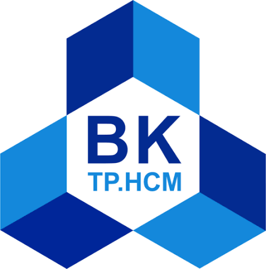
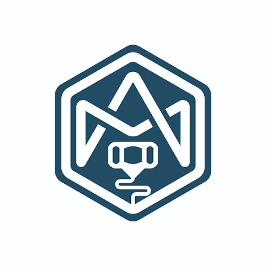
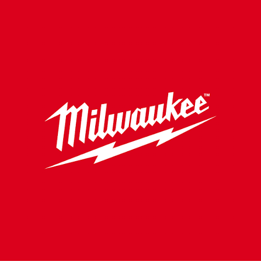
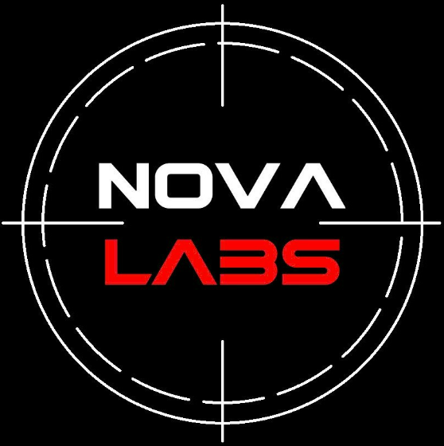

My mechatronics background at HCMUT connects mechanical design, embedded electronics, and software integration. I’m interested in how these disciplines come together in robotics—from CAD and control models to prototype testing and system-level debugging.
FOUNDATION
Education

2022 – Present
Ho Chi Minh City University of Technology (HCMUT)
Bachelor of Mechatronics Engineering
Coursework: Robotics, Dynamic Systems and Control, Motion Control Systems, Computer Vision.
C Certification — TEK4VN · Python Certification — fCC
TOEIC 820
INDUSTRY & COMMUNITY
Experience

May 2024 – Feb 2025
Technix AM
Intern
Developed end-to-end mechatronic products involving firmware, mechanical design, and hardware integration.
Operated, maintained, and troubleshot production systems.
Developed a 3D-printed manual Sony camera lens and an automated PET filament recycling machine.

Jun 2025 – Sep 2025
Techtronic Industries (TTI) — Milwaukee Tool
New Product Development Engineer Intern
Applied RCA, PFMEA, DFMEA, CPK, Lean, and DFM within the NPD Internship Program.
Supported development, prototype testing, and issue resolution for the M18 FUEL™ Snow Blower project.
Worked across functions on failure analysis and technical debugging; the CV reports a reduction from a maximum of 7 NG/day to 2 NG/day.

May 2025 – Present
NovaLabs Robotics
Senior Member & Mentor
Mentored junior members across engineering projects and competitions.
Oversaw technical quality for client-facing 3D printing, PCBA design, and custom mechanical design services.
Coordinated collaboration between hardware, firmware, and software members.